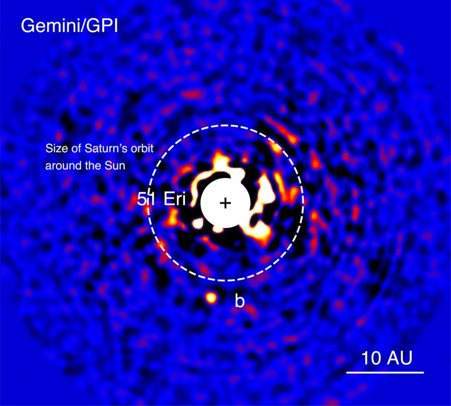

13. August 2015
51 Eridani b: Entdeckung mit dem Gemini Planet Imager
Mit dem Gemini Planet Imager (GPI) des Gemini-Observatoriums wurde ein junger Planet um den Stern 51 Eridani entdeckt. Das Entdeckungsbild im nahen Infrarot vom 18. Dezember 2014 zeigt den Planeten als Punkt unterhalb des abgedeckten Sterns; er ist eine Million Mal lichtschwächer als dieser.
Laut Gemini-Observatorium hat der Planet etwa zwei Jupitermassen und umkreist den rund 100 Lichtjahre entfernten, nur 20 Millionen Jahre alten Stern im 13-fachen Abstand Erde–Sonne. In seiner Atmosphäre wurde Methan nachgewiesen; die Temperatur beträgt etwa 430 Grad Celsius.
Quellen: Gemini Observatory / NOIRLab: "Gemini-Discovered World is Most Like Jupiter" (gemini1505)., 13.08.2015; NOIRLab: "Gemini-Discovered World is Most Like Jupiter" (image gemini1505b)., 13.08.2015